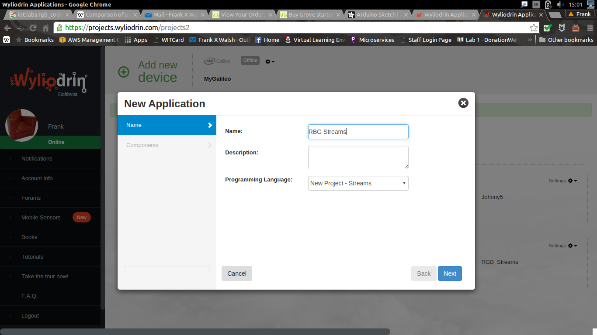
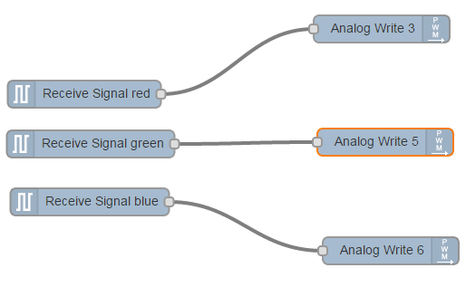
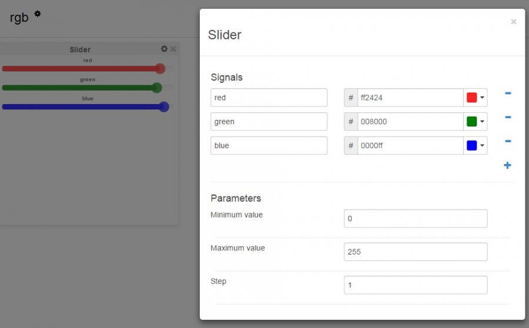

Programming with Sketch and Streams
This tutorial will show you how to control the colour of an RGB LED using Sketch and a programming language called Streams.
Equipment
- Intel Galileo Gen 2 connected to Wyliodrin
- An RGB led (from the Arduino workshop)
- Ethernet cable
- Laptop
Goal
- Light up an RGB LED in different colors.
- Control the intensity and colour using Pulse Width Modulation (PWM).
The Circuit
Connect the RGB LED to the Galileo as shown in the following diagram:

The RGB LED combines of three LEDs: a red one, a green one and a blue one. Each of these LEDs is controlled by a PWM pin (indicated by a "~" on the board), so that it's brightness cna be controlled. As these are promary colours, by controling the "brightness" of each LED, the overall colour can be set.

Make it Work (Sketch)
The following sketch will cycle through Red, Green, and Blue:
#include <Arduino.h>
int redPin = 3;
int greenPin = 5;
int bluePin = 6;
void setColor(int red, int green, int blue)
{
analogWrite(redPin,255-red);
analogWrite(greenPin,255-green);
analogWrite(bluePin, 255-blue);
}
void setup()
{
pinMode(redPin, OUTPUT);
pinMode(greenPin, OUTPUT);
pinMode(bluePin, OUTPUT);
}
void loop()
{
setColor(255, 0, 0); // red
delay(1000);
setColor(0, 255, 0); // green
delay(1000);
setColor(0, 0, 255); // blue
delay(1000);
setColor(255, 255, 0); // yellow
delay(1000);
setColor(80, 0, 80); // purple
delay(1000);
setColor(0, 255, 255); // aqua
delay(1000);
}
Push the code to your device. CHALLENGE: Change the code to include your own colours.
Make it Work (Streams)
In this section we'll use a programming approach callled streams to control the RGB LED. Wyliodrin provides the ability to write Streams programs.
-
Create a new app in Wyliodrin called RGB Streams 
-
Create the following streams program by selecting and configuring the correct nodes: 
-
Now create a Dashboard to supply the signals (i.e. red, green blue) for the program. 
-
If all is well, you should now be able to delpoy the application to the Galileo and control it using the dashboard.
Further Challenges:
- Make a Streams application and use it to create a project that will light up a LED for 3 seconds at one press of a button.
- Do the same, using a switch from the dashboard instead of the button.
- Connect a button that you will have to press in order to turn on an LED and press again to turn the LED off.
- The same, only that if you have pressed the button once, for the next two seconds, pressing again the button will have no effect. In a nutshell, once you press the button, it will become inactive for the next two seconds.
- The same, but using the switch from the dashboard instead of the button.
References
Programming with Streams lab, IoT Summer School 2015, Innovations lab Adafruit Arduino Lessons